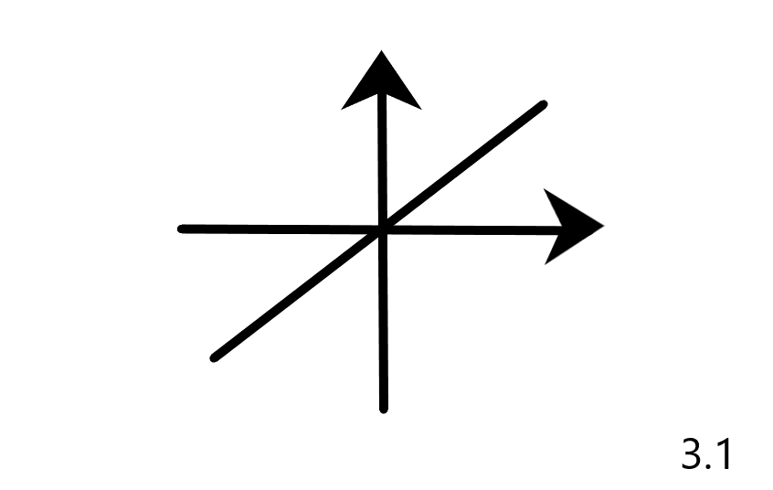
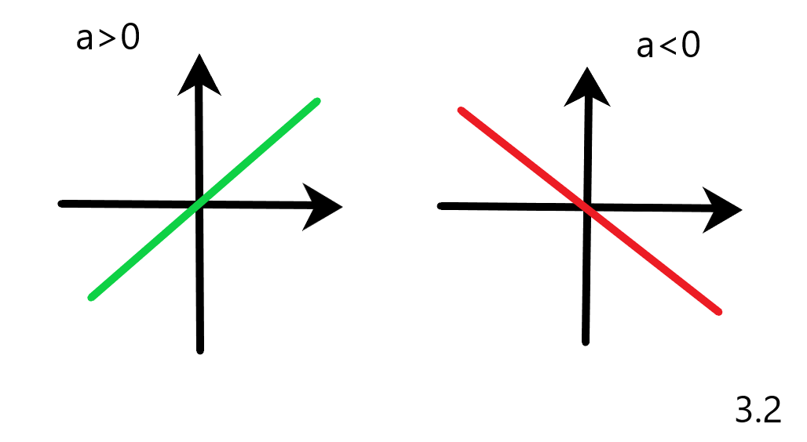
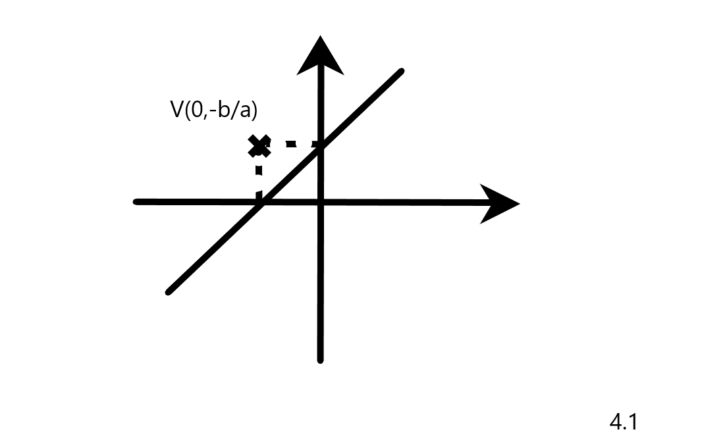
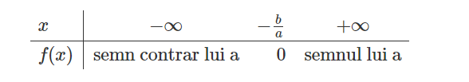

Functia de forma f:R->R, unde f(x)=ax+b, cu a,b∈ R si a ≠ 0, se numeste functie de gradul I.
Reprezentarea grafica a acesteia este o dreapta:

In cazul in care a>0, functia este crescatoare, iar daca a<0, functia va fi descrescatoare:

Intersectia cu axele sistemului:
- Intersectia cu axa Ox: x= - b/a, y=0
- Intersectia cu axa Oy: x=0, y=b.

Semnul functiei de gradul I este dat de relatia -b/a (intersectia cu axa Ox):
- Daca a>0, atunci functia f(x) va avea valoarea negativa pana in punctul -b/a, apoi pozitiva
- Daca a<0, atunci functia f(x) va avea valoarea pozitiva pana in punctul -b/a, apoi negativa.
